집은 빅타민의 사적인 방
우리는 작은 방을 엿봅니다. 빅타민이 자발적으로 우리에게 재롱을 보이거나 손길을 청하려면 밖으로 나와 안전한 사람 곁으로 갑니다.
집 안에서 사용자가 먼저 손을 내미는 교감은 가능합니다. 필요한 잠과 집돌이의 실내 생활을 외출 부족으로 벌점 주지 않습니다.
탐험은 달력 바깥길로, 재롱은 사람 곁으로. 밥 먹고 씻고 쉬는 생활 안에서 아홉 성격이 서로 다른 선택을 하도록 손봅니다.
143 로컬 검사 통과 · 운영 배포 확인 대기예전 관찰에서 이미 고쳐진 부분과 새 결함을 나눠 확인합니다. 아래의 ‘반영’은 현재 소스에 연결했다는 뜻이며, 실제 화면 검사·출시 성공은 맨 아래에서 따로 기록합니다.
| 요청 | 변경 내용 | 현재 단계 |
|---|---|---|
| A방 안 물건도 조명을 받도록 | 음식·장난감의 실제 표시 좌표로 방 안·밖을 판단합니다. 꺼진 방에서는 몸과 함께 살짝 어두워지고 밖으로 나오면 밝기를 복원합니다. | 현재 빌드 검증 · 아래 범위 참조 |
| B소파 가림과 스크롤 추종 | 점프한 몸의 높이와 바닥 경로의 앞·뒤 판정을 분리합니다. 편집창과 빠른 스크롤의 실제 추종·영상·프레임을 함께 확인합니다. | 현재 빌드 검증 · 아래 범위 참조 |
| C집 밖을 실제로 돌아다니기 | 탐험둥이를 우선으로 안전한 달력 발판을 외출 목표에 넣습니다. 비집돌이의 걷기·뛰기·점프와 매번 소파 복귀를 함께 손봅니다. | 현재 빌드 검증 · 아래 범위 참조 |
| D집은 개인 공간 | 자발적 응원·손길 요청은 밖으로 접근합니다. 사용자가 집 안에서 먼저 쓰다듬으면 그 자리에서 반응합니다. | 현재 빌드 검증 · 아래 범위 참조 |
| E성격별 쓰다듬기 | 실제 손길의 공통 행복 반응 뒤에 성격의 짧은 마무리를 연결합니다. 표정만 바꾸며 버티는 일은 진행으로 세지 않습니다. | 현재 빌드 검증 · 아래 범위 참조 |
| F매일 세 독립 관점 | 생활·목표, 공간·UX, OFF·경계·증거를 나눠 평가합니다. 매일 성격당 새 아이디어를 근거와 함께 평가하고 이유를 남깁니다. | 현재 빌드 검증 · 아래 범위 참조 |
| G음식 240 · 장난감 60 | 음식 60개·장난감 36개를 추가합니다. 5단계 가중 확률, 300종의 저장·발견·도감 등록도 함께 검사합니다. | 현재 빌드 검증 · 아래 범위 참조 |
| H토리 포함 TV 다섯 채널 | 제공 화면에서 채팅을 제외해 사용합니다. 로컬 루프를 넣고 자유 자율 선택에서 토리 방송을 가장 자주 고릅니다. | 현재 빌드 검증 · 아래 범위 참조 |
| I커튼·전등 독립 | 각 선택은 각 제어에만 적용합니다. 단계 사이의 분리된 투명 전환으로 겹침·깜빡임을 보완합니다. | 현재 빌드 검증 · 아래 범위 참조 |
| J창·봉·커튼 벽 맞춤 | 창문 묶음을 조금 줄이고 천장 경계 아래 실제 벽 상단에 맞춥니다. 커튼 줄의 접점도 함께 따릅니다. | 현재 빌드 검증 · 아래 범위 참조 |
| K눈·안경 크기 일관성 | 기본 눈 간격과 안경 명목 크기를 기준으로 맞춥니다. 감긴 눈 높이까지 같게 하지 않습니다. 정면 24개 눈 셀을 보완하고 몸·귀·입 기준점은 보존합니다. | 현재 빌드 검증 · 아래 범위 참조 |
| L접기·성격 버튼 정돈 | 태그·계절·집의 접기 원리를 통일하고 성격 버튼을 정상 흐름에 둡니다. 키보드·44px 표적·활동 기록도 확인합니다. | 현재 빌드 검증 · 아래 범위 참조 |
| M검증·보고·배포 구분 | 모델·실제 화면·세 검토·운영 결과를 나눕니다. 이전 통과로 이번 수정본을 통과 처리하지 않습니다. | 로컬 통과 · 운영 확인 대기 |
우리는 작은 방을 엿봅니다. 빅타민이 자발적으로 우리에게 재롱을 보이거나 손길을 청하려면 밖으로 나와 안전한 사람 곁으로 갑니다.
집 안에서 사용자가 먼저 손을 내미는 교감은 가능합니다. 필요한 잠과 집돌이의 실내 생활을 외출 부족으로 벌점 주지 않습니다.
배고프면 실제로 먹고, 씻을 필요가 있으면 패드까지 가서 씻습니다. 졸리면 불·커튼·휴식 조건을 판단하고 깨어나면 다음 일상으로 이어갑니다.
들고 있는 물건·먹던 음식·사용자가 조작하는 대상은 중간에 바꾸지 않습니다. 대상이 없어지거나 길이 막히면 성공으로 꾸미지 않고 다시 판단합니다.
관련 구현: 집·바깥 교감 정책 · 성격·종·보행·경험 가중치 · 실제 손길 이후 반응
선택 직후에는 성격에 맞는 짧은 준비 동작이 나옵니다. 이후 장면은 음식·장난감·실제 손길·공개 작업 완료 같은 계기가 있을 때만 시작합니다. 아래는 실행 가능한 현재 등록 목록이며 153개 모두의 실제 완주를 확인했다는 뜻은 아닙니다.
아래 행동 흐름은 카탈로그 원문입니다. 공용 정책이 실제 외부 접근·가구 접촉 단계를 중간에 삽입합니다.
북쪽을 위로 둔 후천팔괘 배치. 방향의 상징과 성격 연결은 이 프로젝트의 해석입니다. 가운데는 균형 잡힌 동글이입니다. 카드를 누르면 목록을 접을 수 있습니다.
‘10초 무진행’과 정상 휴식은 다릅니다. 표정·장면 이름만 바뀌는 반복, 목표 없는 두 지점 왕복, 물건이 있는데 정리하지 못하는 상태를 봅니다. 실제 이동·식사·칫솔질·운반·필요한 수면을 억지로 끊어 재롱 횟수를 채우지 않습니다.
선택 직후기지개로 몸을 풀고 실제 관객이 있는 바깥 무대를 찾습니다.
쓰다듬은 뒤꾸벅 인사한 뒤 털을 고릅니다. 같은 앵콜을 끝없이 반복하지 않습니다.
선택 직후주변을 킁킁 살피고 덜 가 본 실제 달력 자리를 탐색합니다.
쓰다듬은 뒤코를 킁킁 움직이며 손길을 살핀 뒤 꾸벅 인사합니다.
선택 직후몸을 고른 다음 안전하게 다가갈 수 있는 사람 곁을 찾습니다.
쓰다듬은 뒤몸을 살짝 기대 비비고 만족한 뒤 몸을 단장합니다.
선택 직후포근히 둥지를 만들며 몸을 정돈합니다. 필요한 수면은 정상 생활입니다.
쓰다듬은 뒤졸린 몸을 웅크렸다가 느긋하게 기지개를 켭니다.
선택 직후몸을 가지런히 고른 뒤 흩어진 실제 물건을 확인합니다.
쓰다듬은 뒤털을 정돈하고 단정하게 인사합니다. 남은 정리가 있다면 몸단장만 반복하지 않습니다.
선택 직후점프가 허용되면 짧게 덤벼들며 몸을 풀고 아니면 주변을 킁킁 살핍니다.
쓰다듬은 뒤장난스럽게 한 번 덤벼든 뒤 인사합니다. 점프가 꺼져 있으면 냄새 살피기로 바꿉니다.
선택 직후주변 냄새를 확인하고 배고픔과 실제 음식 상태를 함께 판단합니다.
쓰다듬은 뒤손에 간식 냄새가 남았는지 킁킁 살핀 뒤 몸을 단장합니다.
선택 직후익숙한 자리에서 포근히 몸을 정돈합니다.
쓰다듬은 뒤포근하게 몸을 파묻고 털을 고릅니다. 집 안에서 사용자가 건넨 손길에도 반응합니다.
선택 직후기지개로 시작하고 최근과 다른 적합한 생활을 고릅니다.
쓰다듬은 뒤작게 인사한 뒤 기지개를 켭니다.
보조 12개 = 기본 보조 7개 + 집·편집·음악·재회 연결 4개 + 이번 D143 생활 아이디어 1개. ‘선택 가능’과 ‘실제 완료·채택 검증’은 구분합니다. 조건이 맞지 않는 선택 단계는 건너뛸 수 있습니다.
실제 동물을 그대로 흉내 내는 것만 목표로 삼지 않습니다. 달력과 편집실에서 함께 사는 빅타민에게 납득되는 원인·이동·결과가 있는지 봅니다.
자동 검사는 이상 징후와 실제 관측 표본을 남깁니다. 안전한 길의 존재, 귀엽고 재미있는지, 연속 포즈의 매끄러움은 원본 화면으로 검토합니다. 생활 관찰 기준
음식은 기존 180개에 60개, 장난감은 기존 24개에 36개를 더했습니다. 둘 다 12의 배수입니다. 기존 이름·식별자·발견·읽음 이력을 보존하며 새 그림을 뒤에 추가합니다.
계층 전체 비중과 한 품목의 확률을 나눠 표시합니다. 가장 귀한 한 종의 기본 확률은 0.005%입니다. 희귀 수집이 식사나 기본 행동을 가로막는 필수 조건이 되지는 않습니다.
| 대상 | 계층 | 종수 | 계층 전체 비중 | 개별 1종 기본 확률 |
|---|---|---|---|---|
| 음식 240종 | 흔한 | 96 | 75% | 0.78125% |
| 가끔 | 96 | 23% | 약 0.239583% | |
| 귀한 | 44 | 1.93% | 약 0.0438636% | |
| 아주 귀한 | 3 | 0.065% | 약 0.0216667% | |
| 전설 | 1 | 0.005% | 0.005% | |
| 장난감 60종 | 흔한 | 24 | 75% | 3.125% |
| 가끔 | 18 | 23% | 약 1.27778% | |
| 귀한 | 12 | 1.9% | 약 0.158333% | |
| 아주 귀한 | 5 | 0.095% | 0.019% | |
| 전설 | 1 | 0.005% | 0.005% |
바로 전 품목을 제외하기 전의 기본값입니다. 연속 뽑기에서는 직전 품목을 빼고 재계산합니다. 미발견 우선 보정·천장·24개 순환 보장은 없습니다. 0.005%의 역수는 약 2만 회 수준이지만 그 횟수 안에 나온다는 보장은 아닙니다. 작은 확률도 0.0%로 뭉개지지 않게 표시합니다.
다섯 시트 × 12종. 이 보고서는 신종을 미리 보여 주며 실제 도감에서는 발견 전 이름·희귀도·힌트를 숨깁니다.
세 시트 × 12종. 실물·도감·프로필은 같은 그림을 공유합니다. 직접 들고 논 경험으로 발견하며 단지 꺼내거나 정리한 것으로 발견하지 않습니다.
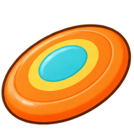
날아라 원반가끔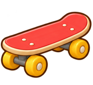
미니 스케이트보드가끔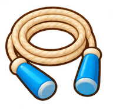
알록 줄넘기가끔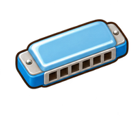
작은 하모니카가끔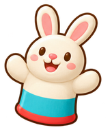
토끼 손인형가끔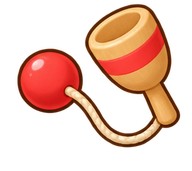
컵받기 장난감가끔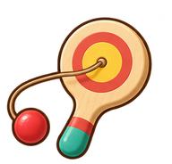
통통 패들볼가끔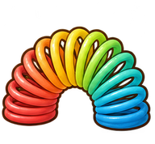
무지개 용수철가끔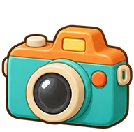
찰칵 카메라가끔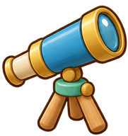
별보기 망원경가끔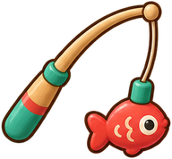
자석 낚시가끔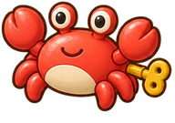
태엽 꽃게가끔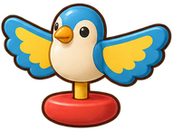
균형 새귀한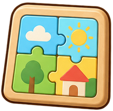
한판 퍼즐귀한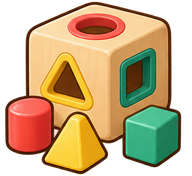
모양 맞추기통귀한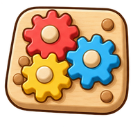
맞물림 톱니판귀한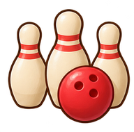
미니 볼링귀한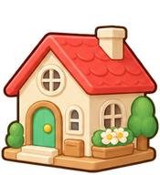
숲속 인형집귀한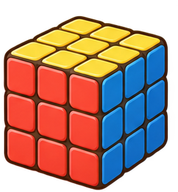
알록 큐브귀한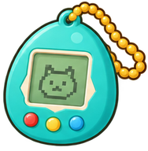
달걀 전자친구아주 귀한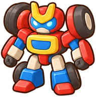
변신 로봇아주 귀한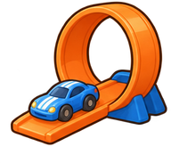
루프 레이싱트랙아주 귀한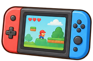
손바닥 게임기아주 귀한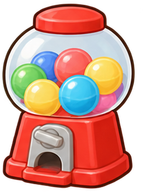
미니 캡슐머신아주 귀한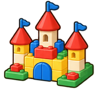
조립 성전설한국어 공식 페이지와 국내 상품을 우선 포함했습니다. 출처는 형태·제품군의 근거이며 국내 인기·매출 순위 검증을 뜻하지 않습니다. 로고·캐릭터 얼굴 대신 형태를 독립된 빅타민 소품으로 표현했습니다.
폼다트 발사기부터 하트 컴팩트까지 6개는 ‘귀한’, 전자친구·로봇·트랙·게임기·캡슐머신 5개는 ‘아주 귀한’, 조립 성은 ‘전설’입니다. 발사·변신·줄 시뮬레이션 같은 전용 기능을 의미하지 않습니다.
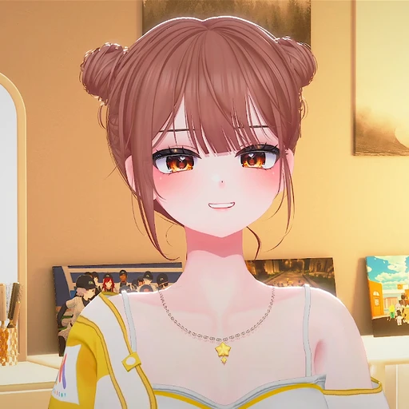
다섯 화면에 작은 반복 움직임을 연결합니다. 실제 방송·외부 영상·채팅 API는 연결하지 않습니다.
비율은 자유로운 자율 채널 추첨에만 적용합니다. 식후 요리나 밤의 달별 감상처럼 상황이 정해진 장면은 그 채널을 고릅니다. 전체 시청 시간이 정확히 55%라는 뜻은 아닙니다.
사용자는 토리 → 자연 → 요리 → 장난감 → 달과 별 → 끄기 순으로 바꿉니다. 직접 고른 상태는 다음 15초간 자율 선택보다 우선합니다. 루프는 앱의 모션 감소·비활성·OFF를 따릅니다.
기존 오전 9시 KST 일일 일정은 같은 대화에서 ACTIVE로 유지하며, 세 독립 관점과 하루 성격당 새 아이디어 하나를 평가하도록 설정을 갱신했습니다. 작성자가 자기 수정까지 승인하지 않도록 구분합니다. 별도 예약 실행 완료는 아직 관측하지 않았습니다.
욕구·수면·외출, 같은 물건 유지, 반복·왕복, 성격별 손길 반응과 새 아이디어 맥락.
실제 접촉·샤워·눈·안경·조명, 소파·스크롤·편집창과 세 표면의 읽기·조작.
OFF·수동 우선권·숨김, 네트워크·저장·활동 기록 경계와 보고 근거의 일치.
자동화의 한계도 남깁니다. 종료 검사는 파일·소스·빌드·검사 근거가 맞는지 확인합니다. 실제 세 독립 검수자의 호출과 시각·행동 평가의 타당성까지 해시만으로 인증하지는 못합니다. 실제 호출·완료 기록과 읽을 수 있는 보고를 보존합니다.
현재 동결 실행: 153개 등록 장면 모델과 네이티브 110개 통과. 실제 선택 27개·아홉 성격의 90초 생활·같은 네 장난감 반납 두 사례를 포함합니다. 153개 모두의 실제 완주나 연속 좌표·시간의 모든 조합을 실행했다는 뜻은 아닙니다.
탐험·응원·생활의 실제 이동, 같은 물건 정리, 집 제어와 화면 가림을 새 빌드에서 확인했습니다. 이전 실패를 통과로 바꾸거나 재시도로 덮지 않았습니다.
run 20261020140801-67000-4d1054f6
BUILD_ID 1Dy_mFKNi-EY380rSVIar
source fe7bffdeeddde8f41901f1afeadc634b9f14697d2ccf5a5250d60d20cf33bd6b
11개 공장 단계 통과·소유 프로세스 정리·실행 중 원본 변경0. 153개 등록 모델·54개 일상·262,144개 정규화 패턴은 순수 검사 범위이며 모든 실제 조합의 완주 증거가 아닙니다. 이후 문서와 아카이브 Git 바이트 보존 규칙만 보완합니다.
제한된 로컬 경험 통계와 실제 결과 ACK를 사용합니다. LLM/신경망 강화학습 훈련·실제 로그인/RLS·OBS·스크린리더·장기간 자연스러움·모든 조합·사람의 그림 승인은 이번 로컬 화면 표본으로 증명하지 않습니다.
CMU Oz의 Believable Agents 보고서는 성격·자기 동기·변화·사회 관계·여러 목적이 만드는 살아 있는 느낌을 다룹니다. 이를 빅타민이 자기 공간과 달력에서 납득되는 일을 이어가는 기준으로 해석했습니다. 동물과 같은 사실성보다 캐릭터의 행동이 자연스럽게 읽히는지를 봅니다.
기존 목표 유지·제한된 경험 선택은 문맥 밴딧의 피드백 관점과 Options의 시간적 추상화를 참고한 구현 위에서 이어집니다. 해당 논문의 알고리즘을 그대로 훈련하거나 새 모델을 도입했다고 주장하지 않습니다.
커튼은 분리된 합성 범위를 사용합니다. CSS 합성은 MDN mix-blend-mode와 CSS Working Group cross-fade 논의를 참고했습니다. 깜빡임 개선은 현재 빌드의 실제 렌더로 확인합니다.
2023–2025년의 1차 연구 다섯 편에서 참고한 핵심은 경험을 다음 선택에 반영하고, 실제 결과를 확인할 때까지 한 목표를 이어가는 구조입니다. 아래 연결은 설계 원리에 대한 해석이며 논문의 효과를 재현했다는 뜻은 아닙니다.
현재 빅타민은 유한한 목표 소유, 제한된 로컬 경험 통계와 실제 접촉·결과 응답(ACK)을 사용합니다. 작은 문맥 밴딧의 보상 통계 갱신은 있지만, 제품에서 LLM을 실행하거나 신경망·대규모 강화학습을 훈련하지 않습니다. 자연어 회고·자동 코드 생성·LTL 검증기를 도입한 것도 아닙니다.
세 독립 관점은 편향을 줄이기 위한 장치이며 무오류 보장이 아닙니다. 논문 전체·최신 기법 전체의 구현, 장기 자연스러움, 현재 빌드의 실제 화면 통과·배포를 이 조사만으로 주장하지 않습니다. 관측되지 않은 행동과 미실행 검사는 검증 대기로 남깁니다.